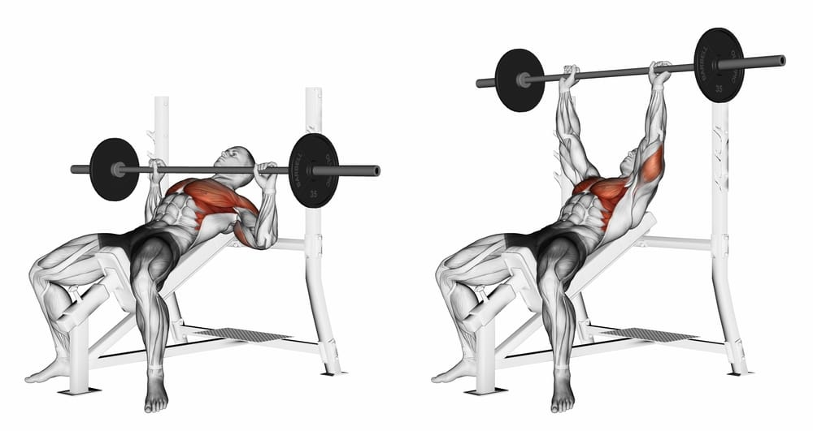
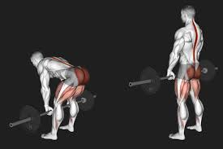

Why I love body building
Body building is really important to me because it serves as a way to vent out problems while spending time with my dad and building a better physique.
I work out with my dad and I use bodybuilding as a way to spend time with him and also make us more fit and strong
Body building for me serves as a way to relieve stress by exerting force lifting heavy weights
My Training Routine
The split that I follow right now is a upper lower rest split. This means that I work upp body, then lower, body and then rest. This makes it so in a week I train each muscle group at least twice
When I do upper body I start off with chest. I Like to do at least 2 different excercises per muscle group. So for chest I do a heavy pressing movement like incline bench then a squeezing movement like chest flys.
Following that I work back. I do a row and a pulldown for lats and mid/upper back
Afterwards I do my triceps and biceps. For triceps I do pushdowns or skullcrushers and for biceps I do incline curls and hammer curls.
Lastly for upper body is your shoulders. For this do lateral raises and rear delt flys focusing on the stretch position
Going on is legs. First is barbell squat. I like to go heavy so I train for strength and go for 6-8 reps. On heavier sets I only do 3.

For the other side of legs I like to go heavy on deadlifts or rdls.
On rest days you can do abs and before you start your bodybuilding exercises you should do some cardio.
Nutrition and Lifestyle
For my diet I like to use a macro tracker and follow the calorie deficit and protein goals it sets for me. This way its easy for me to follow my diet.